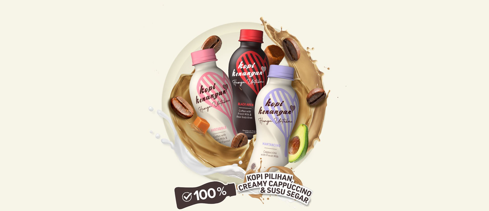
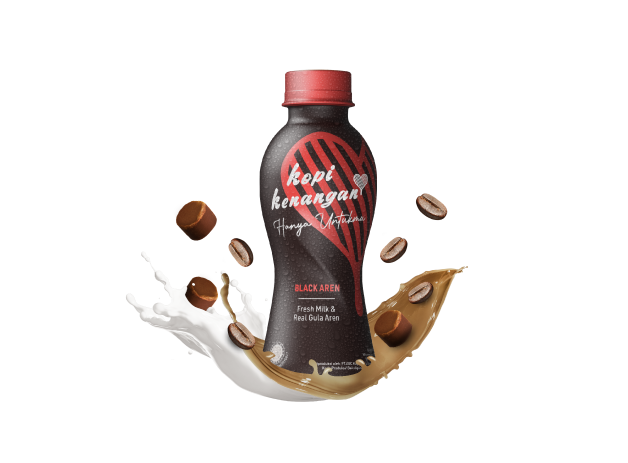
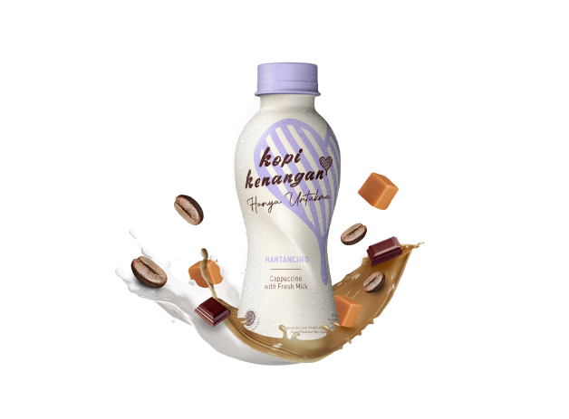
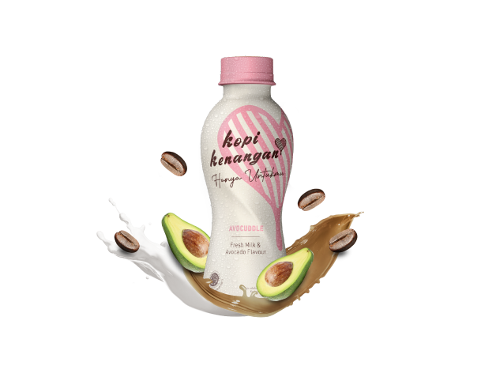
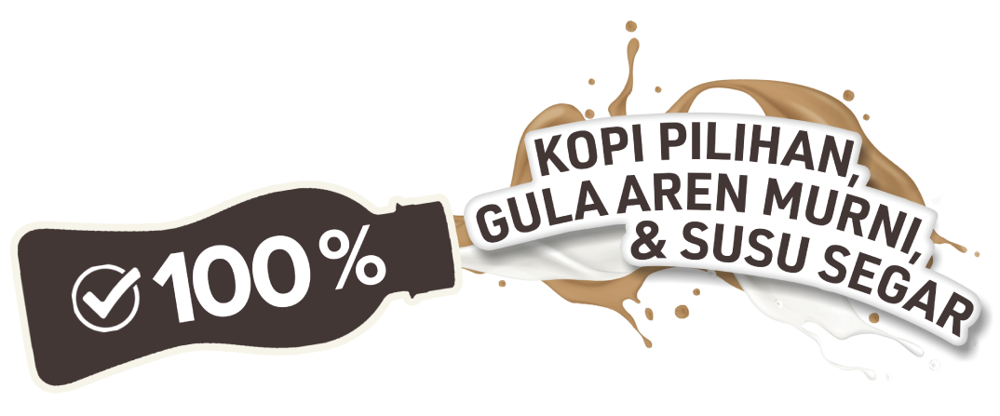

ABOUT US
Sebagai perusahaan New Retail F&B Unicorn pertama di Asia Tenggara, Kopi Kenangan yang berada di bawah naungan Kenangan Brands kini meluncurkan produk FMCG, dimulai dengan produk Ready to Drink Kopi Kenangan Hanya Untukmu, kopi siap minum dalam kemasan sebagai usaha untuk mengembangkan dan memperluas pasar secara nasional, sekaligus menjawab tingginya antusias pelanggan terhadap Kopi Kenangan



BLACK AREN
MANTANCINO
AVOCUDDLE
- Kopi Susu Gula Aren
- Dibuat dari 100% Biji Kopi Indonesia pilihan, Gula Aren Murni dan Susu Segar
- Kopi Cappuccino
- Dibuat dari 100% Biji Kopi Indonesia pilihan, Creamy Cappuccino dan Susu Segar
- Kopi rasa Alpukat
- Dibuat dari 100% Biji Kopi Indonesia pilihan, sensasi Alpukat dan Susu Segar

CERITA TENTANG BLACK AREN
- Kopi Kenangan Hanya Untukmu bekerjasama dengan Petani dari kampung adat di Jawa Barat yang menggabungkan proses tradisional dan modern, sehingga menghasilkan gula aren yang kental, berbau khas smokey, dan berkualitas.
- Gula aren terbaik dihasilkan dari Nira terbaik yang dipanen di pagi hari dan diproses di hari yang sama.
- Semakin murni gula aren, semakin superior kualitas yang dimiliki. Kemudian, gula aren yang diolah tanpa campuran akan memiliki karakteristik warna yang lebih gelap. Dari situ lah nama Black Aren berasal.